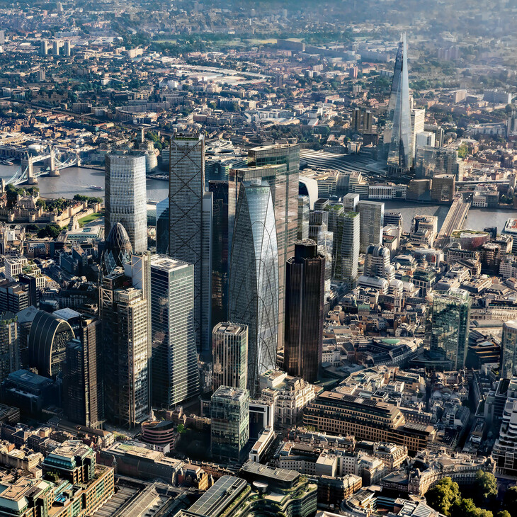

Clădiri moderne importante
Londra este un oraș bogat în istorie și arhitectură, găzduind o varietate impresionantă de clădiri remarcabile. Această listă evidențiază cele mai înalte structuri și zgârie-nori din capitala Regatului Unit, reflectând evoluția orașului de-a lungul secolelor. Din cele mai vechi timpuri, Londra a fost mărturia unor construcții înalte, începând cu Turnul Alb în 1098 și continuând cu capodoperele arhitecturale moderne, precum The Shard. Află mai multe despre această succesiune fascinantă de clădiri în clasamentul lor actual de înălțime.
Clasamentul actual al celor mai înalte clădiri și structuri din Londra îi include pe The Shard, One Canada Square și Heron Tower. The Shard, cu o înălțime impresionantă de 309,7 metri, domină orizontul orașului încă din martie 2012, stabilindu-se ca cea mai înaltă clădire locuibilă din Europa. În timp ce istoria înălțimilor în Londra începe cu Turnul Alb și Catedrala Veche Sf. Paul, evoluția sa continuă să surprindă și să impresioneze în prezentul arhitectural divers și vibrant al orașului.
Au fost puțini zgârie-nori construiți în Londra până la sfârșitul secolului trecut, din cauza restricțiilor de înălțime impuse inițial de London Building Act din 1894, care au persistat până la construirea Mansions cu paisprezece etaje Queen Anne. Deși restricțiile au fost ulterior relaxate, reglementările stricte au rămas în vigoare pentru a păstra vizibilitatea, în special a unor monumente precum Catedrala St. Paul, Turnul Londrei și Palatul Westminster, și pentru a respecta cerințele Autorității Aviației Civile.
Abolirea restricțiilor de înălțime a generat o explozie în construcția de clădiri înalte în anii 1960. Una dintre clădirile remarcabile înalte din Londra a fost Centre Point, înalt de 117 metri (384 ft), finalizat în 1966. Turnul NatWest a urmat în 1980, devenind prima "zgârie-nori" autentică din Londra conform standardelor internaționale, cu o înălțime de 183 metri (600 ft). Acesta a fost succedat în 1991 de One Canada Square, înalt de 235 metri (771 ft), care a devenit punct central al dezvoltării Canary Wharf. După o pauză de 10 ani, au apărut mai multe zgârie-nori noi în peisajul urban al Londrei, printre care 8 Canada Square, 25 Canada Square, clădirile Heron, sediul Barclays, Turnul Broadgate și celebrul 30 St Mary Axe. Clădirea 30 St Mary Axe a fost laureată cu Premiul Skyscraper Emporis în 2003 și Premiul RIBA Stirling pentru arhitectură în 2004.
Odată cu precedentul stabilit de turnurile din Canary Wharf și cu încurajarea primarului Londrei, Ken Livingstone, tendința reînnoită pentru construirea în înălțime a luat avânt în ultimii ani. În prezent, sunt în construcție 8 structuri înalte în Londra, care vor depăși cel puțin 100 de metri (328 ft) în înălțime. "Pinnacle," cu o înălțime proiectată de 288 de metri, este planificat să devină punct central al clusterului de zgârie-nori din City și a fost în așteptare din ianuarie 2012.
| Poziția | Clădire | Înălțime (m) | Informații suplimentare |
|---|---|---|---|
| 1 | The Shard | 309.7 | Zgârie-nori inaugurat în 2012, cea mai înaltă clădire locuibilă din Europa. |
| 2 | One Canada Square | 235 | Parte a complexului Canary Wharf, inaugurată în 1991. |
| 3 | Heron Tower | 230 | Finalizată în 2010, a fost cea mai înaltă clădire din Londra până la construcția The Shard. |
| 4 | Leadenhall Building | 225 | Supranumit "Cheesegrater," inaugurat în 2014 și remarcabil prin designul său distinctiv. |
| 5 | 20 Fenchurch Street (Walkie-Talkie) | 160 | Celebra pentru forma sa concavă și efectul de concentrare a luminii la sol. |
| 6 | The Gherkin | 180 | Unul dintre simbolurile arhitecturale ale Londrei, inaugurat în 2003. |
| 7 | St. George Wharf Tower | 181 | Clădire rezidențială de lux finalizată în 2014 pe malul râului Tamisa. |
| 8 | Strata SE1 | 147 | Complex rezidențial inaugurat în 2010, inclusiv spații verzi și energie regenerabilă. |
| 9 | South Bank Tower | 151 | Clădire rezidențială modernă, renovată și extinsă, finalizată în 2015. |
| 10 | CityPoint | 127 | Clădire de birouri în zona Moorgate, inaugurată în 1967 și extinsă ulterior. |